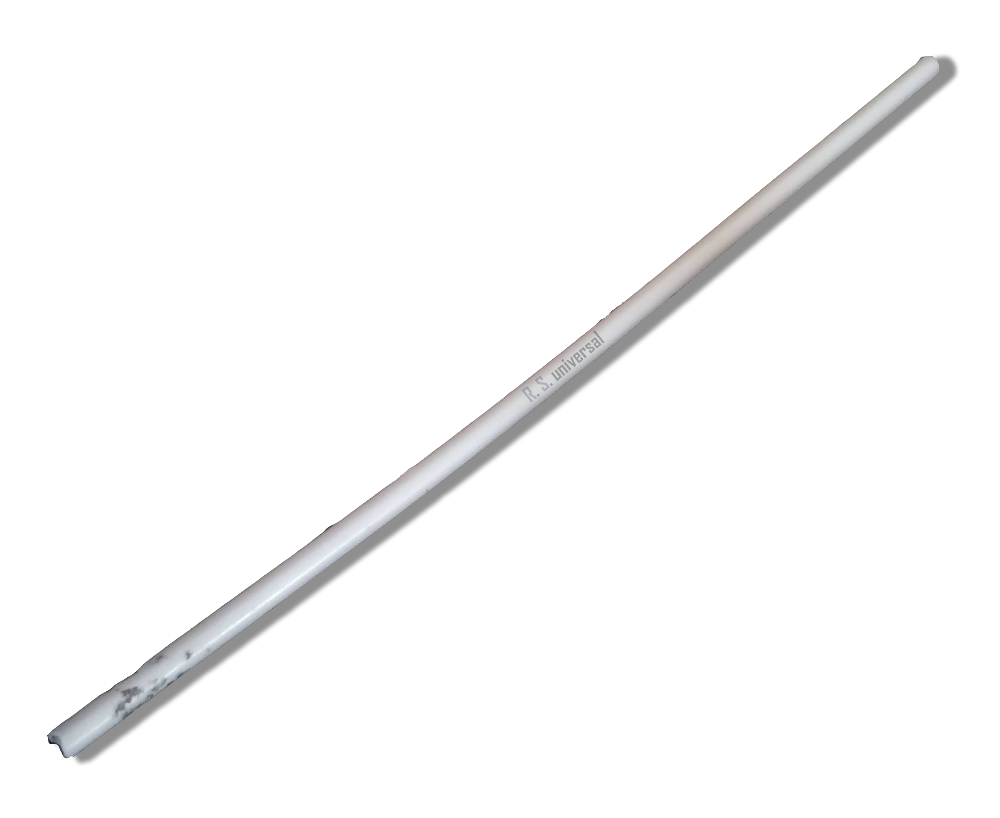

Symbionismus - ideologie
Vlajka symbionismu
.png)
Popis
Symbionismus je neo-socialistická, progtrsivní ideologie vycházející s Dubčekistické interpretace Marxismu s prvky marxistického humanismu Radovana Richty, politického antinaturalismu, post-marxismu a demokracie rad. Symbionismus byl založen, jelikož jsme velice nespokojeni s prioritami a názory mainstreamových Marxistů-Leninistů (zejména KSČM zde v Čechách ale i s Marxisty-Leninisty a někkdy dokonce Maoisty na západě), které považujeme za nehumanistické, pro-ruské a přiliš autoritářské. Symbionisté považují Socialismus s lidskou tváří Alexandra Dubčeka a Radovana Richty za ten ideální směr komunismu, který dle mne měl reálnou šanci udržet socialimus ve Východním bloku při životě ve formě demokratického socialimus se smíšnou ekonomikou s humanistickým směřovnáním. Byť by se již nejednalo o "pravý" komunismus s plánovanou ekonomikou, dle Symbionistů byl tento komunismus neudržitelný a přesun k demokratickému socialismu byl mnohem lepší postup než to, co skončilo kolapsem Sovětského svazu a transformaci socialistických repulik na plně kapitalistické, v případě Ruska i oligarchní země. Český národ desetiletí Stalinistických a normalizačních represí a byrokratického hnusu přimělo k tvrdohlavém antikomunismu, kterou většina něho dnes zastavá. Symbionismus antikomunismus v Čechách nevníma jako výsledek nějakého propagandy zlých Američanů, nýbrž již zmíněných represí a atomsféry, které komunistický režim v Českoslovesnku s podporou SSSR prováděl po většinu své existence s vyjímkou doby Akčního programu KSČ.
Politiky
Historie

Text
L/S Technologies and Research © 2026, Opovaž se z této stránky něco ukrást!! xd